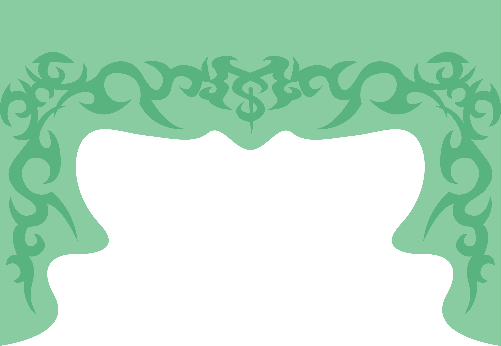

I am currently a senior at Kutztown University of Pennsylvania. I will be graduating this December with a Bachelor of Fine Arts in Communication Design, concentrating in Graphic and Illustrative Design. Throughout my academic career, I have developed a deep appreciation for both conceptual thinking and hand-drawn craft. I am especially passionate about physical illustration and textile-based experiences. Tangible processes are an essential extension of visual storytelling. Working with materials, textures, and hand-drawn elements allows me to create designs that feel human and intentional.
In addition to my academic work, I have completed freelance projects for small businesses such as Timeline Arcade, designing event posters, gift cards, and social media content. These experiences strengthened my understanding of client communication, project management, and creative problem-solving. I learned how to balance multiple deadlines, adapt to feedback, and translate a client’s vision into a cohesive visual outcome. While I am proud of the work I’ve created independently, I am eager to deepen my understanding of the professional design world. I am especially excited by the opportunity to collaborate with a team of like-minded creative individuals who challenge one another, build on shared ideas, and elevate projects beyond what one person could achieve alone.
Since beginning my studies at Kutztown, I have consistently sought out challenges that push me outside of my comfort zone. I have expanded my skill set into UX and web design, as well as interactive coding, learning how to merge digital functionality with strong visual identity. I am particularly interested in bridging traditional and digital practices—combining hand-drawn imagery, texture, and expressive typography with interactive code and web design to bring more life to the screens I am motivated to create work that is distinctive, thoughtful, and boundary-pushing. I believe that risk-taking is an essential part of growth as a designer. Rather than defaulting to what feels safe or familiar, I intentionally experiment with unconventional compositions, unexpected materials, and bold conceptual directions. Standing out, to me, is not about being different for the sake of it, but about discovering new visual languages and perspectives that feel authentic and meaningful.
I am currently exploring different opportunities in the York County area as well as Maryland. Please feel free to email me at micah.spencer1992@gmail.com.